The Corpus
The asset that makes certification meaningful — 9 real, captured-style agent trajectories across 9 domains. Every strategy must pass the gate on every one of them.

Why a corpus matters
A compression strategy is not trustworthy because it works on one example. It needs to hold across the full breadth of what agents actually do: incident response, code debugging, customer support, research synthesis, data analysis, infrastructure work, and financial reconciliation.
distil bench runs this as a CI gate and exits non-zero on failure.
Domain table
| Domain | Trajectory ID | $ Saved | Distil | Aggressive | Prunable tokens |
|---|---|---|---|---|---|
| ops/sre | sre-disk-incident |
32.8% | PASS | FAIL | 615 |
| coding | coding-bugfix |
25.5% | PASS | FAIL | 736 |
| support | support-refund |
32.6% | PASS | FAIL | 765 |
| research | research-synthesis |
25.7% | PASS | FAIL | 809 |
| data-analysis | data-analysis-sql |
18.1% | PASS | FAIL | 965 |
| devops | devops-rollback |
22.8% | PASS | FAIL | 857 |
| finance | finance-reconcile |
24.9% | PASS | FAIL | 1014 |
| web-research | web-research |
89.8% | PASS | FAIL | 428 |
| agent-worklog | agent-worklog |
35.3% | PASS | FAIL | 891 |
| Aggregate | 48.4% | PASS | FAIL | 7,080 | |
Numbers are reproducible from the bundled corpus using the heuristic tokenizer. Absolute dollar figures assume claude-opus-4-8 public list pricing — verify before billing use.
Trajectory structure
The bundled trajectories are 4-turn headless agent loops (the structural minimum, enforced by corpus.validate(), is ≥3 turns). Three structural components:
- Cacheable stable prefix — system instructions, tool definitions, and other content that never changes between turns. The cache-aware engine keeps this byte-stable to maximize cache hits.
- Decision-driving volatile tool outputs — tool results the agent needs to make its next decision. These show up as keep in ablation.
- Causally-inert noise — speculative retrievals, stale observations, context that was present but never cited by any decision. Ablation marks these PRUNE.
Trajectories are stored as JSON files in corpus/. The manifest is at corpus/manifest.json. The loader (distil/corpus.py) resolves the corpus path from the wheel, the repo, or a $DISTIL_CORPUS environment variable.
distil bench — the CI gate
distil bench is the CI gate for new compression strategies: it runs the full corpus measurement loop and exits non-zero if any of the following occur:
- A trajectory fails structural validation (
corpus.validate()) - The distil strategy fails the TOST non-inferiority test on any trajectory
- The gate fails to reject the aggressive lossy strategy on any trajectory (which would indicate the gate itself is broken)
$ distil bench # Exits 0 only if every trajectory passes all three conditions above GATE: PASS — every trajectory certified non-inferior; aggressive rejected on all. # If a new strategy were added that degraded quality on one domain: GATE: FAIL (1 issue(s)) - corpus/finance-reconcile.json: distil FAILED non-inferiority
The rule in one sentence
make gate (non-inferior on every domain, byte-reversible). No green gate, no merge.
Corpus invariants enforced by corpus.validate()
The validate() function checks structural correctness of each trajectory before it enters the gate:
- Invariant 1: ≥3 turns, and the trajectory's model must be in the pricing catalog.
- Invariant 2: Cacheable-prefix ordering — no volatile block may precede a non-volatile block within any turn.
- Invariant 3: STABLE blocks are byte-identical across every turn they appear in (breaks the cache if violated).
- Invariant 4: At least one STABLE block carries a
DECISION:marker (so ablation keeps the prefix). - Invariant 5: At least one VOLATILE, decision-relevant tool output carries a decision; non-decision-relevant volatile blocks must NOT contain a decision marker.
- Invariant 6: At least one causally-inert "noise" block — a VOLATILE, non-decision-relevant block with no decision marker — for ablation to prune.
A trajectory that fails validation is reported as a failure in bench before any cost or quality measurement runs — there is no silent skip.